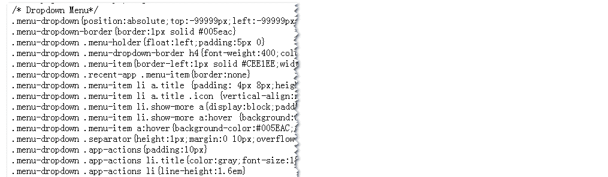

一、面向属性的命名方法
我们习惯在CSS命名的时候掺杂语义，这样可以让代码更易懂。例如淘宝首页“免费注册”按钮上的class名称：help-guest-regist

上面的class命名语义就很明显，独眼龙看告示——一目了然，”help-guest-regist”就是”帮助-顾客-注册”，很nice，很人性化的命名。作为在单一的首页上使用，我是很难挑出什么毛病来的。
但是，从道家“无”的哲学思想来看，语义其实是对自身的一种束缚，越是语义强烈的命名越是没有重用性（尤其是内容语义的）。举个实际点的例子，例如人人网的右侧边栏的标题：
这个标题的class名是”side-item-header”，样式如下图所示：

现在一切ok，现在设想下，如果页面中间的模块有个标题，其样式也是：
{padding:0 0 8px; text-align:right;}
那你发现前面已经有一模一样的CSS样式后，你会怎么办。把中间的标题也用”side-item-header”这个class吗？这里”side”就是表示“边”的意思，这就意味着这个样式用在非侧边栏就是不合理的。你能做的估计即使新命名一个class，就像是”body-item-header”，明明是同样的CSS属性，结果却不能重用（即使使用标识符组合并CSS，这里的命名也是没有重用的）。
可见命名不合理会大大限制你的CSS重用性。如何命名才能让CSS发挥最大的重用性潜力呢？答案就是“面向属性的命名”。 CSS可以自由出入于任何地方，无限重用，而且不用担心冲突，因为“面向属性的命名”就是针对自身属性的一种命名方式，只会overwrite，不会冲突。
就拿上面人人网的标题样式举例，人人网的做法是：
.side-item-header{padding:0 0 8px; text-align:right;}
要是我，我会对其进行分离。最后，CSS命名与样式会如下：
.tr{text-align:right;}
.pb8{padding-bottom:8px;}
而这里分离出来的样式又可以被其他地方使用。
当然，如果网站本身的架构不是对每个侧栏内容进行模块化处理的话，说实话，这里标题的分离还是有点危险的。想想看，如果那天产品经理说底部padding值要改成10像素，啊哦，如果你的网站架构不合理，含这类标题的模块到处塞，会改到你急火攻心，吐血三升而亡的。所以，对于分离，我反复强调，“千万不要对网站通用的元素进行分离”。
所以，记住精简高效的CSS命名准则之一：①网站非通用元素，②样式简单(1~2个属性)，对其分离并使用面向属性的命名方法。
二、精简高效CSS命名之“三无原则”
此“三无原则”就是：无ID，无层级，无标签

CSS命名就应该最简单、最直接，直捣黄龙。没有HTML标签，没有层级，这些通通滚蛋，不要。为什么不要，有三大原因：
1. 限制重用
我们会使用层级(#test
.test)，会使用标签(ul.test)，可能是习惯(没多想)，或是为了避免冲突。但是，我跟你说，从今以后，这种写法让他见鬼去吧（如果不是为了改变CSS优先级的话）。正如开篇论述的哲学观点，你限制越多，越抑制了CSS的重用性。例如#test
.test{}这种写法，里面的CSS重用性多大，完全限死在了id为test的元素下，哪有重用性可言；又如ul.test，这个ul标签十有八九就是装饰用的，往这儿一放，同样CSS样式的div标签可以用吗？哭爹喊娘，眼泪汪汪也不管用啊。所以，相信我，层级啊，标签啊什么的，通通见鬼去吧。要知道，层级啊，标签啊作用是什么，是用来提高CSS优先级，把那个字母长的让人发毛的”!important”干掉的。
2. CSS文件大小
这瓜子虽小，吃多了也是可以填饱肚子的。所以，你的CSS名称不要像老太太的裹脚布一样，搞得又臭又长，如下图所示的人人网那个冗长的CSS命名吧：

你看名称的字节数已经比属性还大了，要是这些名称都在15字符以内，乖乖，这个CSS文件可以小个1~2K绝对没有问题的。你看下图这样子的命名，这样子的CSS排版是不是更舒服，更简洁。

3. 降低了渲染效率
来个例子考考大家（以后我面试别人可能就会考这题），HTML如下：
<div id="test">
<ul class="test"></ul>
</div>
现在要给这里的ul标签一个样式，比如说padding-left:25px;那么下面四种写法哪个渲染速度最快？
#test .test{}， ul.test{}，#test ul{} 以及.test{}。
如果单纯的ul与.test
PK，我还真拿不定谁的渲染速度更快些。但是，一旦牵扯到层级与标签，我100%确定，.test这种最直接的命名方式渲染效率是最高的。要知道，CSS渲染元素和使用JavaScript获取页面元素那是完全不一样的。如果是使用JavaScript获取DOM元素，则#test ul{}速度是最快的，先id获取，再tag获取，这些可都是JavaScript内置的方法。但是，CSS的渲染方式则是属于外太空系的了，《高性能网站进阶指南》一书曾提到CSS的渲染方式是“从右往左”渲染的，就拿#test ul{}举例，先渲染页面上所有的ul标签，再去寻找id为test的元素，所以，出现#test div{}这种写法的人都是傻×的，页面先渲染id为test的元素？非也！先渲染页面上所有的div，再去寻找其老爸有没有id为test的元素。由于这种渲染差异最大就200~300毫秒（补充：这里的差异不是说单纯一个样式的差异，而是这些写法泛滥的页面的全部渲染，其渲染差异数据可以参见“翻译-不同CSS技术及其CSS性能”一文），我们人一般是感觉不到的。所以，长久以来，也都不以为然。但是，我是绝对容不下这种写法的，还有，要是让我看到类似于ul#test{}这样子的命名，不好意思，面试肯定过不了。
所以，CSS命名，只要出现了层级，出现了标签，就是一次额外的渲染，层级越多，渲染的开销也就越大，这就是为什么一些前辈的文章会建议要尽量避免过深的层级。这也是为什么要“无层级”，“无标签”。
对于原则第一条“无ID”，其实与性能没有多大关系，只是一般ID都与JavaScript有奸情，如果再牵扯到CSS样式，如此复杂的三角关系，日后不好处理啊。
三、“三无原则”遗留之样式冲突问题
正如上面讲的，层级，标签可以避免样式冲突，虽然“面向属性的命名”不存在冲突问题，但是，页面上很多样式是无法分离使用“面向属性的命名”的，此时，一不能有层级，二不能有标签，如何避免冲突呢？
首先，规范。项目组所有人的命名方法，习惯都要统一。其次，也是实际的做法，同一内容，使用同一前缀。就如上面的那张图片所示，所有class同一使用od前缀，这样，就绝不会与其他页面的CSS产生冲突了。
现在，还隐藏着一个会让人心存疑惑的遗留问题。如下：

上图中，很多个链接全部存放在一个标签中，全部都是a标签，按照我的“三无原则”，不能使用层级，那么，我这里的每个a标签都得附一个.index_list_a{}这样子的命名吗，这样子repeat下来，页面HTML代码岂不是很大，直接来个.index_list_box a{}，岂不是页面HTML更加清爽。确实有理。实际上，按照我个人实践的经验，这类细小重复的列表元素的样式都是比较简单的，不要忘了，精简高效的CSS命名准则之一的“分离与面向属性命名”，所以，对这里的a标签进行面向属性的命名，权衡后期的重用性和HTML代码开销，还是直接针对a标签进行简单命名是最佳解决方案。
但是，不排除这类最内层标签且重复元素的样式会很复杂，此时，使用层级与标签，或许是更好的做法，但这只存在于一些非常特殊的情况。
四、结语
现在，来个简短的总结。
精简高效的CSS命名的关键字有“分离”，“统一前缀”，方法为“面向属性的命名”，准则为“无层级、无标签”。
其中，“分离”是“面向属性命名”的基础。“面向属性命名”和“无层级、无标签”属于两个不同的系列，一个针对短命名属性，一个针对长命名属性。但是，两个又互相依存。没有“面向属性命名”，“无层级、无标签”命名最后是以不堪重负，HTML膨胀致死结局。而仅仅是“面向属性命名”，前端开发人员会因维护过劳喷血而死。总之，两者缺一不可。
补充于2013-01-10
今天我看到一篇译文，复杂应用的 CSS 性能分析和优化建议，原文地址：http://perfectionkills.com/profiling-css-for-fun-and-profit-optimization-notes/
其中提供了很好的证据说明，糟糕的命名对渲染性能造成的影响。
这是其中的测试图：

可以看到，渲染性能最高的选择器就是 .xxx a
这种形式是最好时的。这说明，“类名+标签名”这种形式确实耗性能。本文可能戳中了不少自封人士的敏感神经，N多不屑，觉得这性能影响不值一提。OK，数据说话，以下为一段引用：
其实并不存在最快的规则，我们通常做法是把样式模块合并到一个文件中试用，这样会导致其中的一部分样式并没有被特定的页面用到。其实把没用的样式规则拿掉是优化 CSS 的最好的方法之一，因为这样的话就可以省去多余的样式匹配，当然合并多个文件到一个大文件还是有好处的，比如说可以减少请求数，但是我们应该只把跟当前页面有关的样式打包到一起。
其实这也不算什么新发现了，Page Speed 早就有过这条建议。不过，我还被它的效果吓到了，去掉多余样式让我节省了大约 200-300ms 的选择器匹配时间（根据Opera 调试工具的结果）。
200-300毫秒？你唬我吧！人家kangax大神可不会玩虚的~
很多网站CSS模块都组队放在一个CSS文件中，比方说你有10个CSS模块，每个模块都有一个.module_a a{} .module_b a{} ...的CSS命名，然后你访问只有模块C的页面，结果如何？不要天真地以为这个页面不管模块a和模块b的事情。正如文中所说的，CSS从右往左渲染，你的页面是没有.module_a 也没有.module_b，到时你页面有a标签啊，a标签大大的多哈！
于是，
.module_a a{}的时候，页面上，所有的a标签扫一遍；
.module_b a{}的时候，页面上，所有的a标签扫一遍；
.module_b c{}的时候，页面上，所有的a标签扫一遍，恩，这个有效果；
.module_b d{}的时候，页面上，所有的a标签扫一遍；
.
.
扫一遍只要0.3毫秒（如上截图），你页面要是有100个类似.xxx a{}，那就是300毫秒的渲染，如果你现在还说“300毫秒的渲染差异我不在意”的话，我也不能说什么了！
.